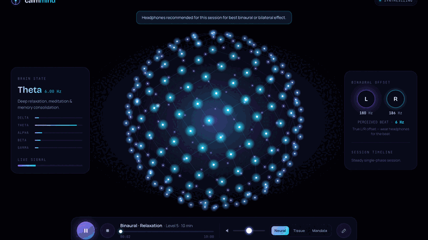

CalmMind — a wellness tool to help you calm, rest, and focus
CalmMind exists to help people cope with stress, prepare for sleep, sustain attention, and practice slow breathing — through personalized audio and reactive visuals you run in any modern browser. No account required.
CalmMind is informed by years of published neurological and auditory-stimulation research — brainwave entrainment, binaural and isochronic stimulation, noise masking, resonant breathing, and bilateral pacing — synthesized into guided recipes and custom sessions. The app applies that literature; it is not a new clinical trial of this build.
CalmMind does not read live EEG, measure clinical HRV from sensors, or replace psychotherapy or emergency services. “Brain state” labels in the UI reflect target entrainment frequencies, not measured brain activity.

Neurological research foundation
Decades of peer-reviewed work inform how CalmMind chooses carrier tones, beat frequencies, breath pacing, and session structure. Topics include cortical frequency-following responses to rhythmic auditory stimulation, band-specific associations (delta through beta), autonomic regulation via slow breathing, and bilateral auditory alternation for self-calming.
Findings in the literature are mixed and individual: some studies report reduced anxiety or improved focus with binaural or isochronic protocols; others show weak or inconsistent entrainment. CalmMind’s evidence tags (below) indicate how strongly each modality is supported in published sources — not a guarantee of your personal outcome.
How stimulation works (concise)
Binaural beats
Two slightly different carrier frequencies in left and right ears produce a perceived beat equal to the difference. The brain may entrain toward alpha, theta, delta, or beta bands. Headphones required. Clinical literature on anxiety and stress is promising but mixed.
Isochronic tones
Pulsed single-channel tones at a target rate. Effective without headphones for many users. Often used for focus (beta-range) in guided recipes.
Noise masking (pink, brown, white)
Steady broadband sound to mask environmental distraction — common for sleep and study. Evidence is mixed but widely used in wellness practice.
Resonant breathing (HRV-inspired)
Audio and visual pacing near ~6 breaths per minute to support autonomic calming. This is not live heart-rate variability biofeedback from a sensor.
Bilateral stimulation (BLS)
Alternating left/right tones (~1.5 Hz) for self-regulation. Not clinician-delivered EMDR therapy.
Brainwave bands (reference)
| Band | Typical range | Associated state | In CalmMind |
|---|---|---|---|
| Delta | ~1–4 Hz | Deep sleep & regeneration | Sleep-oriented presets |
| Theta | ~4–8 Hz | Deep relaxation, meditation | Anxiety wind-down, sleep bridge |
| Alpha | ~8–12 Hz | Calm, present awareness | Relaxation, pre-sleep |
| Beta | ~12–30 Hz | Focus, alertness | Focus Sprint, study masking |
| Gamma | ~30+ Hz | High engagement (emerging) | Research context only |
Evidence framework
Guided recipes in the app display an evidence tier describing the published support for the stimulation type, not a promise of results:
| Tag | Meaning on this site |
|---|---|
| Strong evidence | Multiple clinical or systematic sources support the modality for the stated goal; preset parameters are research-informed. |
| Moderate evidence | Promising but mixed or smaller trial base. |
| Emerging evidence | Early or inconsistent findings. |
| Wellness tradition | Historical or alternative framing — not regulatory validation. |
Sound modalities in the app
- Binaural beats — Strong evidence for anxiety/stress in many clinical settings; headphones recommended.
- Isochronic tones — Moderate evidence; works without headphones.
- Pink / brown / white noise — Moderate evidence for masking and sleep/focus support.
- Nature ambients — CC0 field recordings (rain, ocean, forest); supportive context, not a standalone “treatment.”
- HRV coherence pacing — Strong evidence for resonant breathing benefits; visual + audio pacer only.
- Bilateral stimulation (BLS) — Moderate evidence for self-regulation; not clinical EMDR.
- Solfeggio-style tones — Wellness tradition where offered in custom sound types.
Guided recipes (shipped presets)
| Protocol | Duration | Stimulation | Hz / plan (summary) | Evidence | Intended use |
|---|---|---|---|---|---|
| Anxiety Reset | 15 min | Binaural | Alpha→theta (10→6 Hz) | Strong | Acute stress wind-down |
| Sleep Onset | 35 min | Binaural | Alpha bridge (10 Hz) → delta (2 Hz) + fade | Moderate | Bedtime transition |
| Focus Sprint | 25 min | Isochronic | Beta ramp (14→18 Hz) | Moderate | Sustained attention |
| Coherence Breath | 10 min | HRV pacer | ~6 breaths/min + forest ambient | Strong | Autonomic calming |
| Calm Down (BLS) | 10 min | Bilateral BLS | ~1.5 Hz alternation | Moderate | Self-regulation (not EMDR) |
| Deep Sleep | 45 min | Brown noise | Masking + night ambience | Moderate | Sleep support |
| Focus / Study | 30 min | White noise | Steady masking | Moderate | Study / distraction masking |
| Wind Down | 20 min | Binaural | Alpha→theta (10→6 Hz) | Strong | Evening relaxation |
| Box Breath | 10 min | HRV pacer | 4-4-4-4 box pattern | Strong | Structured calming breath |
Custom sessions let you set stress level, duration, sound type, ambient layer, and visualizer without a preset.
What CalmMind does not measure
- Live EEG or brain imaging
- Clinical diagnosis or treatment planning
- Heart-rate variability from a chest strap or watch (pacing only)
- Cloud-stored health records (preferences stay in your browser unless you clear site data)
- Emergency or crisis intervention — call local emergency services if you are in danger
Selected further reading
Third-party publications cited during product research (CalmMind does not endorse every claim):